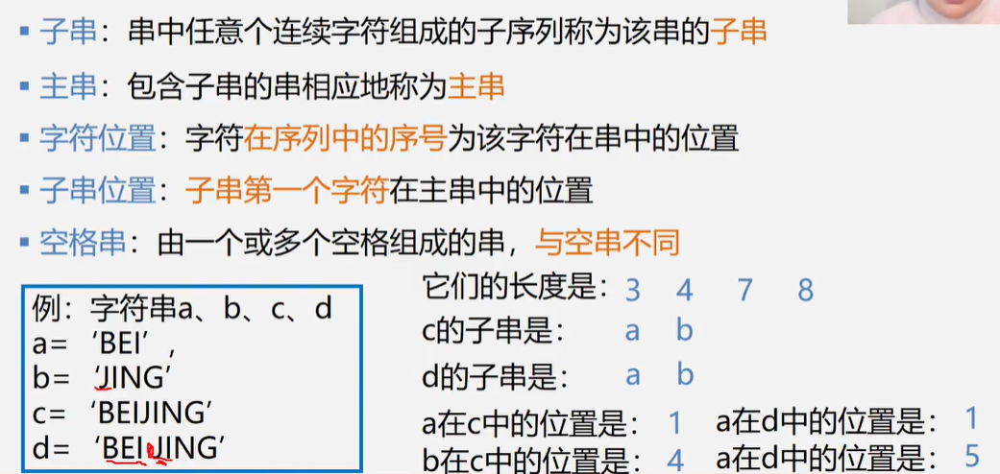

4/8 串、数组和广义表
4.1 串：内容受限的线性表
串（String）——零个或多个任意字符组成的有限序列


4.1.1串的顺序存储结构（更常用）

4.1.2串的链式存储结构——块链结构


4.1.4 串的模式匹配算法
- 目的：确定主串中所含子串第一次出现的位置
Brute—Force算法，亦称简单匹配算法：穷举

BF算法的时间复杂度
最好的情况是比较m次，最差为(n-m+1)*m次，效率低

KMP算法设计思想
- 此时主串的指针i不必回溯！
- 假设某时刻已经比较到子串的前(j-1)位和主串第i位前面的(j-1)位已经相等了，但是i，j本身不相等；
- 此时寻找主串第i位前面有没有(k-1)位和子串从头开始的前(k-1)位正好相等；
- 如果没有，子串第一位和主串第i位继续往后比；
- 如果有，那么主串的第i位和子串的第k位继续往后比；
- 如此做直到找到或者主串比完了；

这里相当于用下面这个函数把子串要用到的所有next[j]等于多少算出来，记录在next数组里了。
ps:这段代码妙不可言！~~

整合之后：

对next进行改进：

将指针从j移到前面的next[j]了，但是原来第j位已经确定和主串不相等了，如果第j位和第next[j]位相等，肯定也不和主串相等。所以继续前移到next[next[j]]的位置，继续和第j位相比直到不等为止。

4.2 数组
数组：按一定格式排列起来的具有相同类型的数据元素的集合(一般用顺序结构)
int num[5]={1,2,3,4,5};
int num[5][8];//五行八列的数组


4.2.1 特殊矩阵的压缩存储


链式存储稀疏矩阵——十字链表：

4.3 广义表
广义表(又称列表Lists)是n≥0个元素a0, a1, … ,an-1的有限序列，其中每一个ai或者是原子，或者是一个广义表。


评论